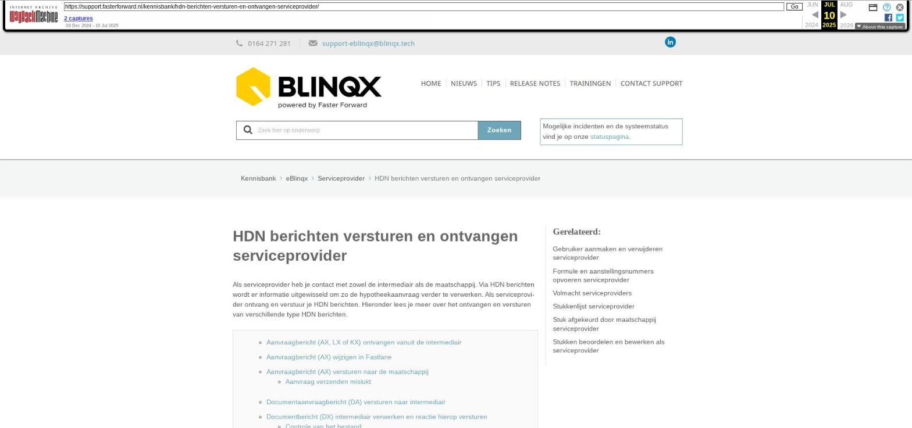

HDN berichten versturen en ontvangen serviceprovider
Als serviceprovider heb je contact met zowel de intermediair als de maatschappij. Via HDN berichten wordt er informatie uitgewisseld om zo de hypotheekaanvraag verder te verwerken. Als serviceprovider ontvang en verstuur je HDN berichten. Hieronder lees je meer over het ontvangen en versturen van verschillende type HDN berichten.
- Aanvraagbericht (AX, LX of KX) ontvangen vanuit de intermediair
- Aanvraagbericht (AX) wijzigen in Fastlane
- Aanvraagbericht (AX) versturen naar de maatschappij
- Aanvraag verzenden mislukt
- Documentaanvraagbericht (DA) versturen naar intermediair
- Documentbericht (DX) intermediair verwerken en reactie hierop versturen
- Controle van het bestand
- Toegestuurde documenten koppelen
- Document opgevraagd via andere bron
- DA bericht als reactie verzenden
- Documentaanvraagbericht (DA) ontvangen vanuit maatschappij
- Documenten (DX) versturen naar de maatschappij
- Vanuit de stukkenlijst
- Vanuit workflow
- Aanvraagbericht (AX) doorsturen vanuit product
- Offerteberichten (OX) doorsturen
- Statusberichten (SX) versturen
- Verzonden berichten valideren
- Aanvraagbericht (AX, LX of KX) ontvangen vanuit de intermediair
De intermediair stuurt de aanvraag per HDN naar jullie toe. Dit aanvraagbericht (AX, LX of KX) komt in de HDN inbox binnen. Wanneer Elements een juiste match kan maken dan wordt er direct een dossier met het hypotheekproduct aangemaakt.
Indien een binnengekomen bericht niet automatisch verwerkt kan worden, wordt er aangegeven dat er actie vereist is. In het overzicht herken je deze aan een oranje dossiericoon wat vooraan de regel staat. Klik op het potlood aan de rechterkant van de regel om het bericht aan te vullen. Vervolgens wordt er een nieuw klantdossier aangemaakt. In de kolom Dossier komt het dossiernummer te staan, waarop je kan klikken om direct naar het dossier te gaan.
Aanvraagbericht (AX) wijzigen in Fastlane
De intermediair stuurt de aanvraag naar jullie toe. Het kan gebeuren dat deze aanvraag niet helemaal klopt en dat je als serviceprovider deze graag zelf wilt aanpassen. Dit is mogelijk in Fastlane. Hiervoor ga je naar het hypotheekproduct en je klikt op het bliksemicoon en vervolgens op 'Aanvraag wijzigen in Fastlane'.
Vervolgens wordt je doorgeleid naar het tabblad Fastlane en vanuit daar kom je in de juiste aanvraag terecht. In Fastlane kan je de aanvraag wijzigen om deze vervolgens terug te sturen naar Elements. Deze aangepaste aanvraag komt via de HDN inbox binnen en de aanvraag wordt in het dossier aangepast. Vanuit het dossier kan je de aanvraag versturen naar de maatschappij.
Aanvraagbericht (AX) versturen naar de maatschappij
Vanuit het dossier kan je de aanvraag verzenden naar de maatschappij middels de workflow. Je opent het betreffende product en klikt op het pijltje achter de status. Hier doorloop je de stappen om de aanvraag te verzenden. Dit geldt voor berichten die tijdens kantooruren worden behandeld. Buiten kantooruren wordt dit bericht automatisch doorgestuurd. Voor het verzenden van HDN berichten moet het aanstellingsnummer ingesteld staan onder de formule of kantoor. Hier lees je er meer over.
Aanvraag verzenden mislukt
Wanneer het niet lukt om de AX te verzenden dan komt er in het tabblad HDN onder het product een melding te staan. Het kan voorkomen dat er een validatiefout in het bericht zit. Er komt dan een VX bericht terug en bij het uitgaande AX bericht is zichtbaar dat het om een validatiebericht gaat. Hier lees je meer over het bekijken van dit VX bericht.
Het kan ook zo zijn dat er in Elements gegevens missen om het AX bericht te kunnen genereren. Er wordt dan geen AX bericht aangemaakt na het klikken op de stap in de workflow. Bij het binnenkomende AX bericht onder het tabblad HDN komt de melding te staan waarom er geen uitgaand AX bericht gemaakt kan worden.
Documentaanvraagbericht (DA) versturen naar intermediair
Intermediairs moeten stukken aanleveren, zodat de hypotheekaanvraag beoordeeld kan worden. De gewenste stukken kan je bij de intermediair via HDN opvragen door middel van een documentaanvraagbericht (DA). Dit DA-bericht genereer je en verzend je vanuit de stukkenlijst. Hier lees je daar meer over.
Documentbericht (DX) intermediair verwerken en reactie hierop versturen
Als reactie op het documentaanvraag (DA) bericht stuurt een intermediair een documentbericht (DX) terug. Dit documentbericht bevat documenten die horen bij de opgevraagde stukken. Voordat de documenten in de stukkenlijst worden verwerkt, worden er eerst wat controles gedaan.
Controle van het bestand
Wanneer een DX bericht binnenkomt worden er diverse controles gedaan, namelijk:
Bestandsformaat: het document moet een JPG-file of PDF zijn. Een JPG-file wordt door Elements omgezet naar een PDF bestand. Wanneer het niet het juiste bestandstype is of het JPG bestand kan niet worden omgezet naar een PDF bestand dan wordt er automatisch een SX bericht toegestuurd met daarin de waarde '05 Bestandstype niet ondersteund'.
Het document is met een wachtwoord beveiligd: is dit het geval dan kan het document niet geopend worden. Er wordt automatisch een SX bericht retour gestuurd met daarin de waarde '01 Document password – protected'.
Toegestuurde documenten koppelen
Vervolgens worden de toegestuurde documenten verwerkt in de stukkenlijst. Het matchen aan de stukken gebeurt aan de hand van documentnummers. Wanneer de aanvraag wel kan worden gevonden, maar niet het juiste documentnummer dan wordt er automatisch een SX bericht uitgestuurd met daarin de status '03 DocumentMijNr onbekend'.
Een document uit een HDN DX-bericht wordt opgenomen onder een stuk als de status van de serviceprovider beoordeling is:
- Aan te leveren
- Afgekeurd en opnieuw aan te leveren (zie toelichting)
- In behandeling
- Ontvangen
Bij een afwijkende status (voorlopig akkoord, akkoord en vervallen zie toelichting) ontvangt de intermediair automatisch een statusbericht met de waarde '02 Document reeds ontvangen'.
Document opgevraagd via andere bron
In de stukkenlijst staat ook de kolom 'B'. In deze kolom is zichtbaar of de stukken door de maatschappij opgevraagd zijn via een andere bron. Als het stuk via een andere bron is opgevraagd dan staat er 'Ja' in de kolom. Dit is ter administratie, je kunt verder niets met dit stuk. Wanneer op dit stuk toch een DX bericht terugkomt dan wordt er automatisch een SX-bericht retour gestuurd met daarin de status '07 Document reeds opgevraagd via bron'.
- Voorbeeld B = Ja in stukkenlijst
- DA bericht als reactie verzenden
Nadat de documenten verwerkt zijn, stuurt Elements automatisch een antwoord naar de intermediair middels een DA-bericht. Dit DA-bericht wordt na ongeveer 5 minuten automatisch verzonden. De ontvangen stukken krijgen hiermee de status 'Ontvangen'.
Documentaanvraagbericht (DA) ontvangen vanuit maatschappij
De maatschappij vraagt stukken op en dit kan de maatschappij doen via HDN middels een DA-bericht. Dit DA-bericht komt binnen in de HDN inbox. Er wordt gekeken of de opgevraagde stukken al aanwezig zijn in de stukkenlijst van het dossier. Is dit niet het geval dan worden er nieuwe stukken in de stukkenlijst aangemaakt. Is dit wel het geval dan wordt het opgevraagde stuk door de maatschappij samengevoegd met het bestaande stuk in het dossier.
Het kan voorkomen dat Elements meerdere stukken herkent en hierdoor niet weet met welk bestaand stuk het aangevraagde stuk samengevoegd kan worden. Het DA-bericht kan dan niet automatisch verwerkt worden. Dit herken je aan het oranje mapje voor het bericht in de HDN-inbox.
Door op het potloodje te klikken kan je het bericht verder aanvullen. Via het dropdownmenu dien je het juiste stuk te selecteren. Als het juiste stuk er niet tussen staat is het ook mogelijk om via het dropdownmenu een nieuw stuk aan te maken.
Achter het stuk staat een informatie-icoon. Door hier op te klikken krijg je meer informatie over het opgevraagde stuk.
- Documenten (DX) versturen naar de maatschappij
- Vanuit de stukkenlijst
In de stukkenlijst kan je kiezen voor 'Verstuur stukken naar de maatschappij'. Je komt vervolgens in een nieuw scherm waarin je kan aangeven welke documenten je naar de maatschappij wilt verzenden. De stukken waaraan een document is gekoppeld, die beoordeeld zijn en daarnaast door de maatschappij zijn opgevraagd middels een DA bericht kunnen verzonden worden.
Vanuit workflow
Ook is het mogelijk de documenten te versturen vanuit de workflow. In de workflow heb je de keuze om alleen beoordeelde stukken te versturen of alle stukken te versturen.
Alleen beoordeelde stukken versturen.
In de stukkenlijst heb je de mogelijkheid om te kiezen welke documenten je naar de maatschappij wilt versturen. Wanneer je de documenten vanuit de workflow naar de maatschappij verstuurt dan heb je deze keuze niet. Alle documenten die voldoen aan de volgende voorwaarden worden verstuurd:
- Er is een document gekoppeld aan het stuk
- De status van Beoordeling SP is 'Voorlopig akkoord'
- Als het een volmachtaanvraag betreft heeft ook de Beoordeling Mij de status 'Voorlopig akkoord'
- De documentstatus van de maatschappij is 'Aan te leveren' of 'Afgekeurd opnieuw aan te leveren'
Alle stukken versturen
Alle stukken worden verstuurd ongeacht de beoordeling van de serviceprovider en volmacht.
Voor beide opties geldt dat de stukken die gekoppeld zijn aan een bankgarantie worden uitgesloten. Het bericht zal pas worden verstuurd als het laatste binnengekomen DA-bericht is verwerkt.
Aanvraagbericht (AX) doorsturen vanuit product
Het is mogelijk om het laatste aanvraagbericht (voor AX, KX- en LX berichten) door te sturen naar de maatschappij. Dit kan via de knop 'Laatste aanvraagbericht doorsturen' onder het tabblad HDN wat staat onder het product.
Offerteberichten (OX) doorsturen
De workflow stuurt de OX berichten die binnenkomen automatisch door naar de intermediair. Ook is het mogelijk om zelf handmatig het OX bericht te versturen. Dit kan je doen vanuit het tabblad HDN onder het betreffende product. Dit middels het vliegtuigicoon achter het bericht.
In de dossierhistorie wordt opgenomen wanneer een OX bericht doorgestuurd is. Je ziet het verzonden bericht ook terug onder het tabblad HDN.
Statusberichten (SX) versturen
Wanneer er een aanvraagbericht wordt ontvangen dan wordt er door Elements direct automatisch een statusbericht verzonden. In dit statusbericht wordt aangegeven dat de aanvraag is ontvangen. Daarnaast worden en statusberichten verstuurd als reactie op binnenkomen van stukken. Bovenstaande zijn automatisch verstuurde SX berichten. Het is ook mogelijk om handmatig statusberichten vanuit de workflow te verzenden, bijvoorbeeld om de intermediair te laten weten dat de offerteaanvraag niet te verwerken is of dat de offerteaanvraag wordt aangepast door de maatschappij of geldverstrekker.
Verzonden berichten valideren
Alle uitgaande berichten worden gevalideerd voor verzenden middels de webservice van HDN. Berichten met een validatiefout komen terecht in de HDN inbox onder 'Uitgaand mislukt'.
Afbeeldingen bij dit artikel


Schermafbeelding van de oorspronkelijke pagina

Bron: Wayback Machine-archief